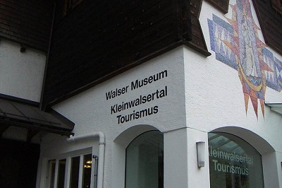

morly旅游网
列支敦士登公国（德语：Fürstentum Liechtenstein），简称“列支敦士登”，是欧洲中部的内陆袖珍国家，处于瑞士与奥地利两国之间，为世界上仅有的两个双重内陆国之一，全国只有西侧约三分之一的面积位在平坦的河谷里，其余地区大都属于山地。列支敦士登国土总面积160.5平方公里，全国总人口37666人（2016年）。
列支敦士登的领土曾经是罗马帝国瑞提亚（Raetia）行省的一部分。1719年1月，当时神圣罗马帝国皇帝查理六世将许内勒贝格庄园与瓦杜茨郡合并成立一个独立的小型大公国，赐名为列支敦士登；1800年—1815年拿破仑战争时期，列支敦士登遭到法兰西第一帝国和俄罗斯帝国侵略；1806年，列支敦士登成为主权国家，1866年获得独立。
列支敦士登是一个高度发达的资本主义国家，也是世界上唯一一个官方语言是德语但与德国没有交界的国家，维持君主立宪制的政治体制，国内不设常规军，关税由瑞士管理。列支敦士登虽然土地狭小、人口稀少，但却拥有非常高的国民收入水平；2014年，该国国内生产总值实现63.88亿美元。邮票是列支敦士登的特色产品，邮票产业是该国的支柱产业。
列支敦士登是欧洲少数几个袖珍小国之一，国土总面积仅160.5平方公里，是位于阿尔卑斯山中部和中欧莱茵河上游东岸的内陆国；西邻瑞士，以莱茵河为界东接奥地利。国家首都瓦杜兹中心点位于北纬47°09'，东经9°31'。
列支敦士登国家博物馆
列支敦士登国家博物馆位于瓦杜兹市中心，包括两座历史建筑和一座新建筑，是轻松了解该公国历史、文化和自然的好去处。 在博物馆三个风格各异的展馆、42个展览室中，你不仅可以深入探索列支敦士登的历史遗产，领略当地的文化和自然环境，还能欣赏列支敦士登“王冠”的复制品等。 此外，博物馆定期有主题特展.
马尔本
马尔本的滑雪道多是为新手所设，有一些中级道以及越野滑道，尽管如此，在这里滑雪很划算，是周边国家里性价比最高的，英国王室成员查尔斯王子就是在这里学习滑雪的。住宿的地方时简朴的山间小屋，在户外用餐令人感到愉悦，可以一边品尝美食，一边稍作休息，更可以欣赏到令人惊艳的山中美景。
瓦尔泽博物馆
瓦尔泽博物馆位于瓦杜兹东南方山上的特里森贝格村，展出了来自瑞士瓦莱州的华尔多教派的迁徙史。附近还有一个漂亮的洋葱顶教堂。 开放时间：周一至周五 7:45-11:45&13:30-17:45；周六 7:45-11:00&13:30-17:00。
列支敦士登艺术馆
列支敦士登艺术馆的主要馆藏是当地的艺术品，它们当中的大多数时间并不久远。 开放时间：周二、周三、周五至周日 10:00-17:00；周四 10:00-20:00。
内容整理至网络，如有侵权，请联系我们！1255394075@qq.com